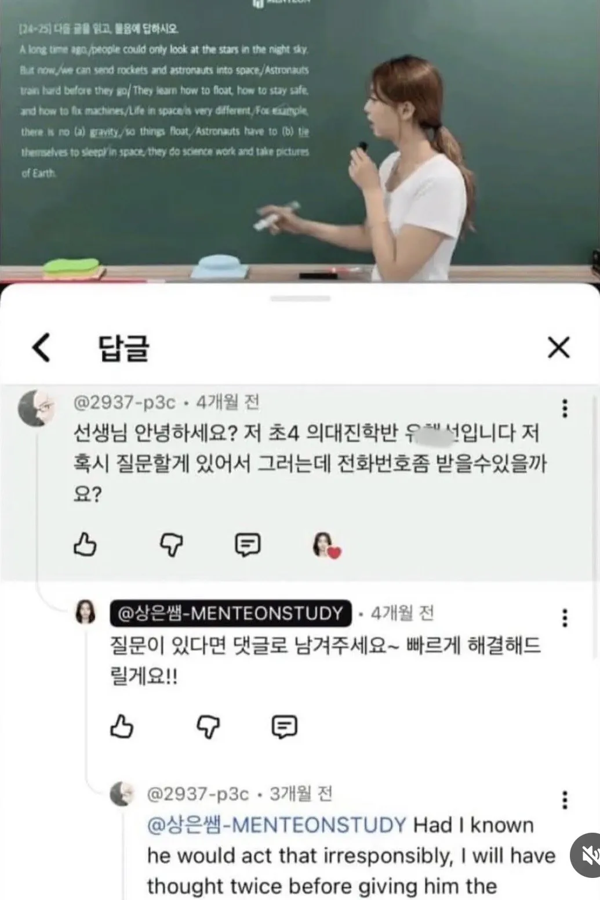
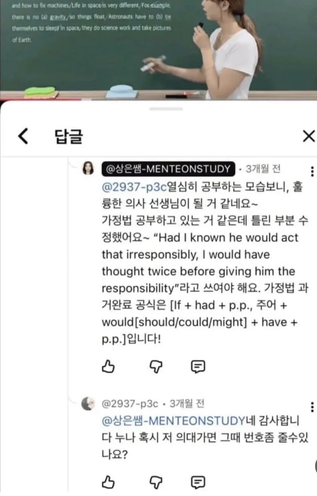
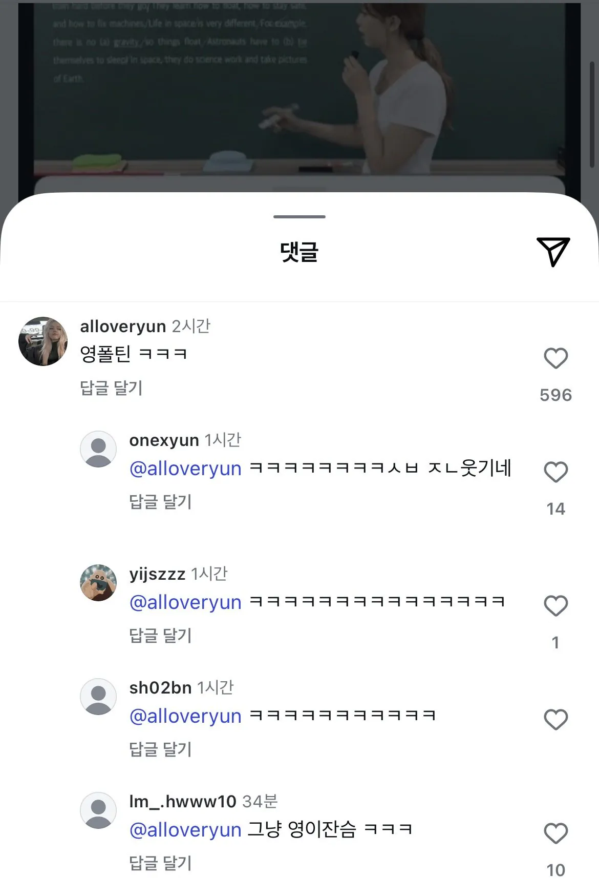

포틴은 원래 그냥 영 아님?
rhyme맞춘거
늙포틴
ㄹㅇㅋㅋ 실제로 영하고 행동이 늙이니까 저건 늙포틴이 맞네

제가 클때쯤 수술 로봇 나오지않을까
영포틴은 시발ㅋㅋㅋㅋㅋㅋㅋㅋㅋ
초사이어인4면 저럴수있지
어린게 나랑 취향이 같네ㄷㄷ 사랑해요 상은쌤
선생님에서 누나로 바뀜ㅋㅋ
누나 나 의대진학반이야 번호좀 주
피카츄 돈까스 사줄게
너 해설이 맘에 드는군 번호 좀 다오
쿼터 폴틴 있지않았나 ㅋㅋㅋ
어느 나이때나 그새끼들이 존재하지.
집착웃기노
영포틴ㅋㅋㅋㅋㅋㅋㅋ